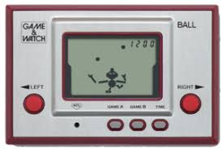
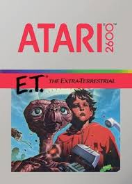
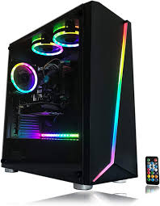

History of Video Games
Time line
|
1950
Spacewar! |
1970

Pong |
1980

Space Invaders |
1980 pt.2

Game and watch handheld concle |
1980 pt.3

ET for the atari is a famously bad game |
now

Gaming CPU |